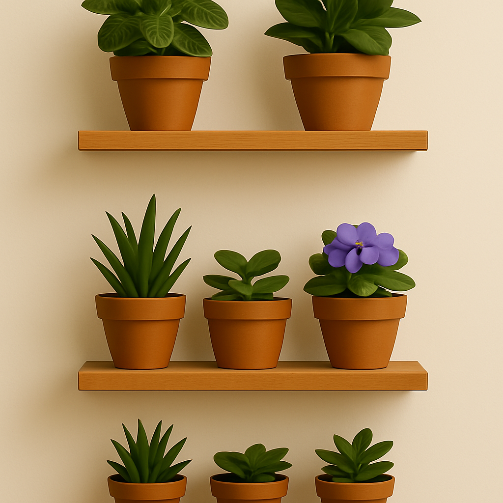
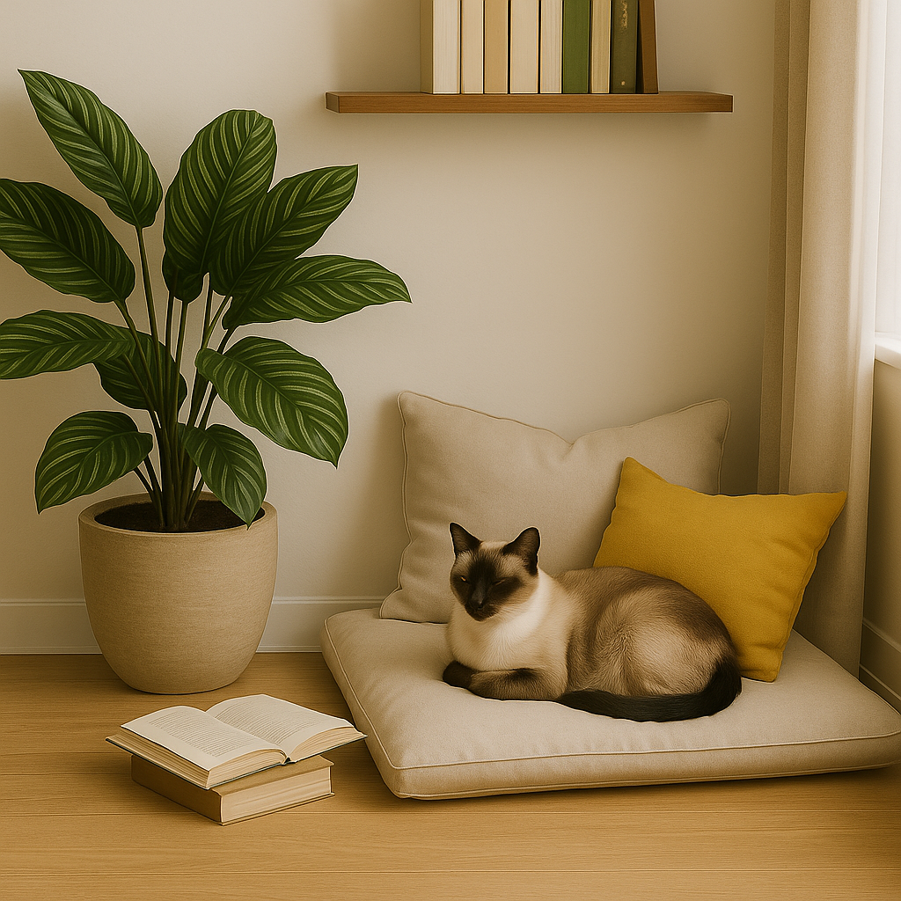
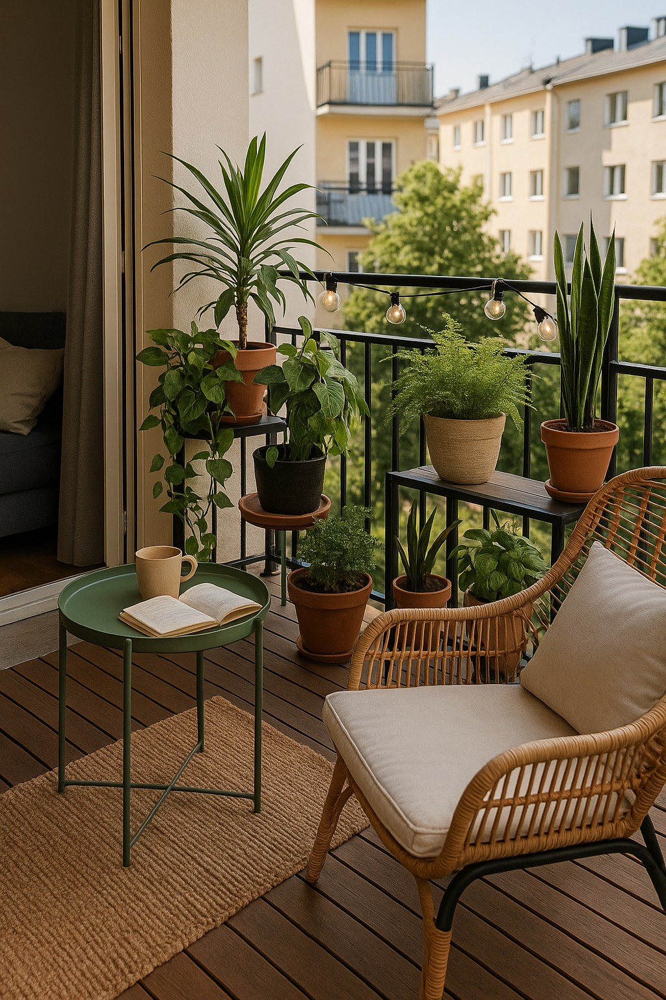

3 ideias de decoração seguras e charmosas para quem vive com gatos
Decorar a casa com plantas é um prazer — e pode ser ainda mais recompensador quando você considera a segurança e o bem-estar dos seus gatos. Aqui vão 3 ideias práticas e bonitas para transformar seu espaço em um ambiente harmônico para todos.
🌿 1. Prateleiras verdes com plantas seguras
Use prateleiras altas para acomodar vasos com peperômias, fitônias ou violetas. Essas espécies são não tóxicas, delicadas e perfeitas para espaços pequenos. Combine diferentes alturas e cores para criar um efeito natural e sofisticado.
🪴 2. Canto de leitura com plantas e almofadas
Monte um canto aconchegante com almofadas, livros e uma palmeira-ráfis ou calatéia em vaso grande. São plantas lindas e seguras. Seu gato provavelmente vai adotar esse cantinho como novo território.
🌸 3. Varanda viva e segura
Transforme sua varanda em um mini-jardim suspenso. Pendure orquídeas phalaenopsis e complemente com ervas aromáticas não tóxicas como alecrim e manjericão. Lembre-se de garantir sombra e segurança contra quedas ou fugas.
🌱 Decoração é expressão — e quando ela respeita os habitantes da casa, o lar floresce de verdade.
← Voltar para o blog